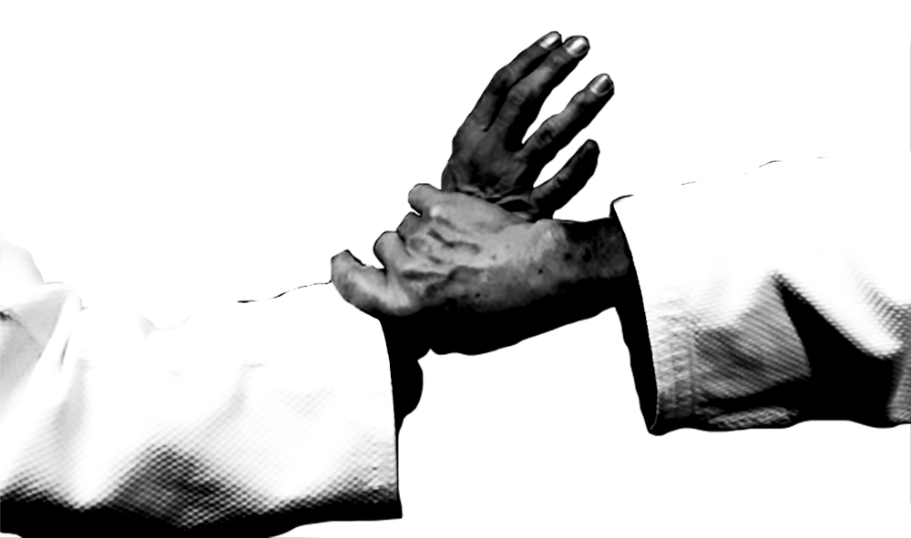
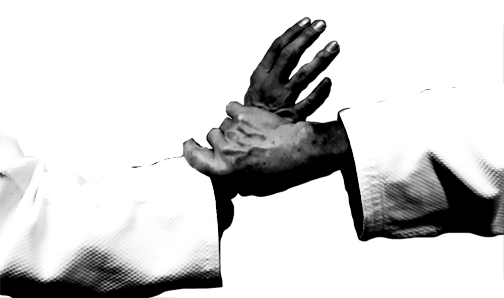

En plus des techniques à main nues, l'aïkido comporte l'étude du maniement d'armes en bois : le sabre ou bokken (aikiken), le bâton ou jō (aikijo), le couteau ou tantō, et de façon plus anecdotique, le juken (baïonnette), arme dans laquelle excellait le fondateur et qui lui avait valu d'en être formateur à l'armée avant et pendant la guerre russo-japonaise (1904-1905).
Le fondateur a réuni dans le jō des techniques de lance, de sabre de naginata (fauchard) et de Jūkendō (Baïonnette) . La technique de sabre qu'il a développée est singulièrement différente du kenjutsu des koryu (écoles traditionnelles). C'est surtout à l'étude de cette dernière que le fondateur consacra son énergie en ce qui concerne les armes.

Le fondateur de l'aïkido ne voulait pas entendre parler de compétition. L'accent est mis sur le développement complet de l'individu. Pendant les cours, les élèves observent l'enseignant faire la démonstration d'une technique et travaillent ensuite avec un partenaire pour la répliquer. Ils améliorent ainsi leur technique et leur compréhension de l'art. Le mouvement, le positionnement, la précision et le rythme sont tous des aspects importants dans l'exécution des techniques. Les élèves gagnent également en souplesse et en adaptation en les appliquant.
Les aïkidokas s'entraînent par deux, au niveau débutant. L’« attaquant » (uke, littéralement « celui qui accepte, qui chute », également appelé aite18, littéralement « celui qui prête sa main ») déclenche une attaque contre le « défenseur » (tori « celui qui saisit », également appelé shi19 et parfois nage « celui qui projette » ou encore shite « celui qui exécute »), qui la neutralise avec une technique d'aïkido.
En général, la technique est étudiée de la manière suivante : le professeur montre le mouvement, puis le partenaire aite attaque tori quatre fois (deux fois de chaque côté : gauche et droite alternativement), puis les partenaires échangent les rôles pour 4 nouvelles attaques et ainsi de suite. Lorsque plusieurs mouvements ont été vus à partir d'une même attaque, le professeur peut faire travailler en « technique libre » (jiyū waza) : les rôles aite et tori ne changent pas, aite se relève après chaque mouvement et réattaque immédiatement tori qui applique la technique qu'il veut ; le placement et le mouvement du corps ainsi que l'endurance (cardio-vasculaire) sont alors travaillés. Parfois, tori est assailli par plusieurs aite, afin de travailler la réponse à une attaque de groupe (ce travail se nomme randori bien qu'il soit différent du combat libre pratiqué au judo).
 
